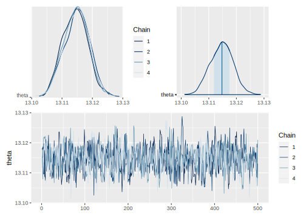
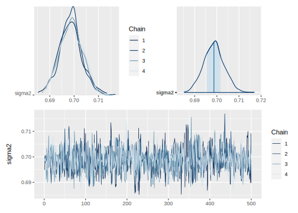
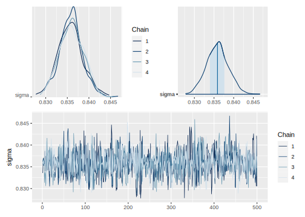
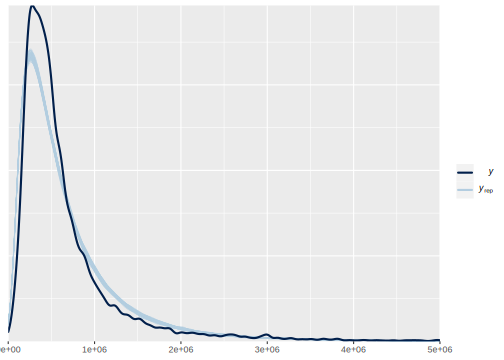

4.9 Parámetros independientes
La distribución previa para el parámetro \(\theta\) será
\[ \begin{equation*} \theta \sim Normal(\mu,\tau^2) \end{equation*} \]
Y la distribución previa para el parámetro \(\sigma^2\) será
\[ \begin{equation*} \sigma^2 \sim Inversa-Gamma(n_0/2,n_0\sigma^2_0/2) \end{equation*} \]
Asumiendo independencia previa, la distribución previa conjunta estará dada por
\[ \begin{equation} p(\theta,\sigma^2)\propto (\sigma^2)^{-n_0/2-1}\exp\left\{-\dfrac{n_0\sigma^2_0}{2\sigma^2}\right\} \exp\left\{-\frac{1}{2\tau^2}(\theta-\mu)^2\right\} \end{equation} \]
La distribución posterior conjunta de los parámetros de interés está dada por
\[ \begin{align} p(\theta,\sigma^2 \mid \mathbf{Y})&\propto (\sigma^2)^{-(n+n_0)/2-1} \notag \\ &\times \exp\left\{-\frac{1}{2\sigma^2}\left[n_0\sigma^2_0+(n-1)S^2+n(\bar{y}-\theta)^2\right]-\frac{1}{2\tau^2}(\theta-\mu)^2\right\} \end{align} \]
La distribución posterior condicional de \(\theta\) es
\[ \begin{equation} \theta \mid \sigma^2,\mathbf{Y} \sim Normal(\mu_n,\tau_n^2) \end{equation} \]
En donde las expresiones para \(\mu_n\) y \(\tau_n^2\) están dados previamente. Por otro lado, la distribución posterior condicional de \(\sigma^2\) es
\[ \begin{equation} \sigma^2 \mid \theta,\mathbf{Y} \sim Inversa-Gamma\left(\dfrac{n_0+n}{2},\dfrac{v_0}{2}\right) \end{equation} \]
con \(v_0=n_0\sigma^2_0+(n-1)S^2+n(\bar{y}-\theta)^2\).
4.9.1 Práctica en STAN
Sea \(Y\) el logaritmo del ingreso
dataNormal <- encuesta %>%
transmute(dam_ee,
logIngreso = log(ingcorte +1)) %>%
filter(dam_ee == "08")Creando código de STAN
data {
int<lower=0> n;
real y[n];
}
parameters {
real sigma;
real theta;
}
transformed parameters {
real sigma2;
sigma2 = pow(sigma, 2);
}
model {
y ~ normal(theta, sigma);
theta ~ normal(0, 1000);
sigma2 ~ inv_gamma(0.001, 0.001);
}
generated quantities {
real ypred[n]; // vector de longitud n
for(kk in 1:n){
ypred[kk] = normal_rng(theta,sigma);
}
}Preparando el código de STAN
NormalMeanVar <- "Recursos/Día1/Sesion4/Data/modelosStan/5NormalMeanVar.stan" Organizando datos para STAN
sample_data <- list(n = nrow(dataNormal),
y = dataNormal$logIngreso)Para ejecutar STAN en R tenemos la librería rstan
options(mc.cores = parallel::detectCores())
model_NormalMedia <- stan(
file = NormalMeanVar,
data = sample_data,
verbose = FALSE,
warmup = 500,
iter = 1000,
cores = 4
)La estimación del parámetro \(\theta\) y \(\sigma^2\) es:
summary(model_NormalMedia,
pars = c("theta", "sigma2", "sigma"))$summary %>%
tba()| mean | se_mean | sd | 2.5% | 25% | 50% | 75% | 97.5% | n_eff | Rhat | |
|---|---|---|---|---|---|---|---|---|---|---|
| theta | 13.1147 | 1e-04 | 0.0041 | 13.1067 | 13.1119 | 13.1148 | 13.1175 | 13.1226 | 1127.412 | 1.0010 |
| sigma2 | 0.6987 | 1e-04 | 0.0046 | 0.6898 | 0.6955 | 0.6987 | 0.7016 | 0.7078 | 1612.814 | 1.0017 |
| sigma | 0.8359 | 1e-04 | 0.0028 | 0.8305 | 0.8340 | 0.8359 | 0.8376 | 0.8413 | 1613.833 | 1.0017 |
posterior_theta <- as.array(model_NormalMedia, pars = "theta")
(mcmc_dens_chains(posterior_theta) +
mcmc_areas(posterior_theta) ) /
mcmc_trace(posterior_theta)
posterior_sigma2 <- as.array(model_NormalMedia, pars = "sigma2")
(mcmc_dens_chains(posterior_sigma2) +
mcmc_areas(posterior_sigma2) ) /
mcmc_trace(posterior_sigma2)
posterior_sigma <- as.array(model_NormalMedia, pars = "sigma")
(mcmc_dens_chains(posterior_sigma) +
mcmc_areas(posterior_sigma) ) /
mcmc_trace(posterior_sigma)
y_pred_B <- as.array(model_NormalMedia, pars = "ypred") %>%
as_draws_matrix()
rowsrandom <- sample(nrow(y_pred_B), 100)
y_pred2 <- y_pred_B[rowsrandom, ]
ppc_dens_overlay(y = as.numeric(exp(dataNormal$logIngreso)-1), y_pred2) + xlim(0,5000000)